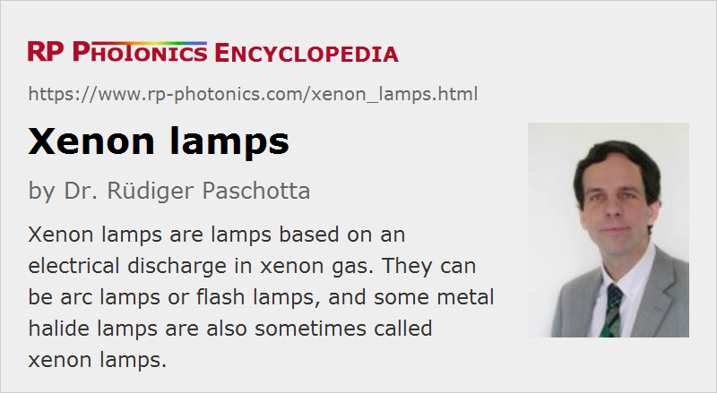

Xenon Lamps
Definition: lamps based on an electrical discharge in xenon gas
More general term: gas discharge lamps
German: Xenonlampen
Category: non-laser light sources
How to cite the article; suggest additional literature
Author: Dr. Rüdiger Paschotta
Xenon lamps are lamps based on an electrical discharge in the noble gas xenon. They are thus all gas discharge lamps. There are quite different types of xenon lamps, explained in the following sections. Some common properties of most of them are:
- a xenon filling
- broadband white light emission (→ white light sources), i.e., a broad optical spectrum with some spectral lines superimposed on a broad continuum, which spans the complete visible spectral range (with high color rendering index) and also extends significantly into the ultraviolet and into the near infrared
- a lamp envelope made of fused silica, sometimes of other glasses like borosilicates
- electrodes made of tungsten metal (sometimes with dopants like thorium), being particularly resistant to high operation temperatures
On the other hand, such lamps can differ very much in terms of fill pressure, arc length, size and shape of the lamp envelope, operation mode (pulsed or continuous-wave) and applications.
Xenon Flash Lamps
Xenon flash lamps are available with rather different fill pressures from well below 1 atm to several tens of atmospheres. In any case, the emitted optical spectrum is rather broad and contains a continuum with superimposed spectral lines. The applied rather high peak currents and current densities increase the emission of light within the visible region, rather than in the near infrared.
Typical applications for the visible output of xenon lamps are flash lights for photography (including high speed photography) and strobe lights for stroboscopes. Mainly the UV output is used for analytical (spectroscopic) purposes, e.g. in clinical and scientific context. Besides, high-power xenon flash lamps are used for the pumping of free-running and Q-switched solid-state lasers, particularly in cases with high pulse energy but low pulse repetition rate.
See the article on flash lamps for more details.
Xenon Arc Lamps
There are xenon arc lamps, which basically means that they are operated continuously. Frequently, they are operated with high electrical input powers of several kilowatts. Some examples for applications:
- Some xenon arc lamps with a relatively long arc (e.g. 100 mm or more) are used for continuous-wave pumping of solid-state lasers (→ lamp-pumped lasers), but those are more and more replaced with diode-pumped lasers. They can be considered as high intensity discharge lamps.
- Xenon arc lamps with a relatively short arc length (electrode distance) are used in projection displays, e.g. movie projectors in cinemas and theaters.
- Similar short-arc lamps can also be used for directed searchlights,
See the article on arc lamps for more details.
Lamps with Xenon and Other Metals
In some cases, for example in the area of automotive headlamps, the term xenon lamps is used for metal halide lamps which contain xenon in addition to some metal halides. However, compared with many other metal halide lamps, the amount of halides is relatively low and used mainly for lowering the color temperature. With that technology, bright light with substantially higher luminous efficacy and better suited color temperature (compared with pure xenon lamps) can be generated.
Similarly, there are xenon/mercury lamps not containing halides, exhibiting enhanced UV output.
Suppliers
The RP Photonics Buyer's Guide contains 5 suppliers for xenon lamps.
Questions and Comments from Users
Here you can submit questions and comments. As far as they get accepted by the author, they will appear above this paragraph together with the author’s answer. The author will decide on acceptance based on certain criteria. Essentially, the issue must be of sufficiently broad interest.
Please do not enter personal data here; we would otherwise delete it soon. (See also our privacy declaration.) If you wish to receive personal feedback or consultancy from the author, please contact him e.g. via e-mail.
By submitting the information, you give your consent to the potential publication of your inputs on our website according to our rules. (If you later retract your consent, we will delete those inputs.) As your inputs are first reviewed by the author, they may be published with some delay.
See also: gas discharge lamps, flash lamps, arc lamps, metal halide lamps, white light sources
and other articles in the category non-laser light sources
|  |
If you like this page, please share the link with your friends and colleagues, e.g. via social media:
These sharing buttons are implemented in a privacy-friendly way!